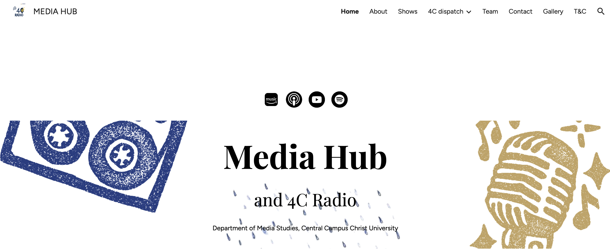

01
Tree Talks
This episode dives into climate emergency and our action for mitigation and adaptation or the lack of it.
02 / DESIGN & VISUAL COMMUNICATION
A collection of visual communication projects spanning podcast artwork, website design and poster creation. My work explores visual storytelling, composition, typography and the relationship between design and communication.
01 / AUDIO & VISUAL IDENTITY
Cover artwork created for podcasts and audio projects. Each design uses visual elements to communicate the subject, atmosphere and identity of the episode or series.
This episode dives into climate emergency and our action for mitigation and adaptation or the lack of it.

This recurring episode explores the dynamics of campus life and the experiences of students navigating their academic journey.

This recurring episode examines the intersection of climate science and mythology, exploring how stories shape our understanding of environmental issues.

This recurring episode delves into the hidden narratives and behind-the-scenes details that shape the stories we hear.

Dr Madhav Gadgil reflects on the remarkable individuals he encountered during his decades of environmental activism.

This episode explores the impact of the 2026 blizzard on New York City and the community's response to the natural disaster.

This episode delves into the cultural and social dynamics of Delhi, exploring the stories that define the city's identity.

The analysis of an inspiring story from The Times of India’s about 3,000 millet farmers in Karnataka and explore media’s role in climate change mitigation and sustainable farming
02 / DIGITAL DESIGN
Websites and digital platforms I have contributed to designing and developing, bringing together visual identity, content structure and user experience.

The official media platform of the Department of Media Studies at CHRIST University.
Visit website ↗
A digital publication associated with 4C Media Hub.
Visit website ↗
The website for the Popular Culture and National Identities Conference.
Visit website ↗
03 / PRINT & GRAPHIC DESIGN
A selection of posters and graphic design projects. Each piece explores visual communication through typography, imagery, colour and composition.

Join the team poster.

The main background cover for the 4C Radio brand.

It is live.

Call for papers.

Event details.

First marketing "theatrics".

The rejected poster and I can see why it was rejected

I don't know why I made this.